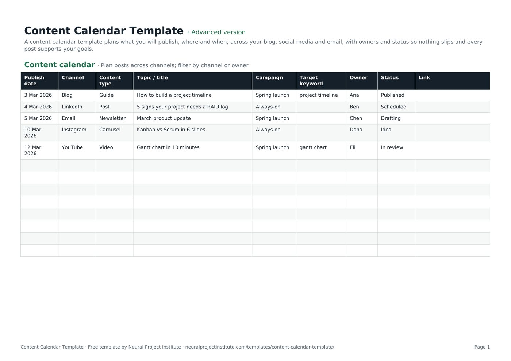

Free Content Calendar Template for Social Media, Blogs and Email
This free content calendar template plans what you will publish, where and when across your blog, social media, email, video and podcast, with an owner, campaign, target keyword and status for every piece. Download it in Google Sheets, Excel or PDF at beginner, advanced or expert level, with no sign-up, and use it as a social media calendar, an editorial calendar or a marketing calendar.

Key takeaways
- A content calendar is a schedule of planned content with publish dates, channels, topics, owners and status, so nothing slips and every piece supports a goal.
- The template tracks nine fields per piece, with dropdowns for nine channels and a five-step status workflow from Idea to Published.
- Plan one month in detail and the next quarter at theme or campaign level, and leave room for timely content.
- Set production deadlines before the publish date: the calendar shows when content goes live, so work back from it.
- Review the calendar weekly, record the live link once published and use the results to plan the next month.
Free download · no sign-up
Get the content calendar template
Pick your level and format: Google Sheets, Excel or a print-ready PDF. Spreadsheets include dropdowns, formulas and sample rows you can overwrite.
What is a content calendar?
A content calendar is a schedule of the content you plan to publish, showing for each piece the publish date, channel, format, topic, owner and production status. It turns a content strategy into a day-by-day plan, so your team publishes consistently, avoids gaps and clashes, and can see at a glance what is coming up and what is late.
People use several names for the same idea. An editorial calendar usually means long-form content such as blog posts, articles and newsletters; a social media calendar covers posts on social platforms; a marketing calendar adds campaigns, launches and events. This template handles all three in one sheet: the Channel column tells you which is which, and filters let you see each view on its own.
If your team works in sprints or on a board, our guide to Agile marketing explains how a content calendar fits alongside a backlog.
What is in this content calendar template
The template has one tab, Content calendar, with five sample pieces across a blog, LinkedIn, email, Instagram and YouTube. Overwrite them with your own. Here is a live preview of the advanced version:
| Publish date | Channel | Content type | Topic / title | Campaign | Target keyword | Owner | Status | Link |
|---|---|---|---|---|---|---|---|---|
| 3 Mar 2026 | Blog | Guide | How to build a project timeline | Spring launch | project timeline | Ana | Published | |
| 4 Mar 2026 | Post | 5 signs your project needs a RAID log | Always-on | Ben | Scheduled | |||
| 5 Mar 2026 | Newsletter | March product update | Spring launch | Chen | Drafting | |||
| 10 Mar 2026 | Carousel | Kanban vs Scrum in 6 slides | Always-on | Dana | Idea | |||
| 12 Mar 2026 | YouTube | Video | Gantt chart in 10 minutes | Spring launch | gantt chart | Eli | In review |
Sample rows are examples: replace them with your own.
- Content calendar: Publish date, Channel, Content type, Topic / title, Campaign, Target keyword, Owner, Status, Link
The nine columns explained
- Publish date: the day the piece goes live. Sort by this column to see your schedule in order.
- Channel: a dropdown with Blog, LinkedIn, Instagram, Facebook, X, TikTok, YouTube, Email and Podcast. Edit the list to match the channels you actually use.
- Content type: the format, such as guide, post, newsletter, carousel or video.
- Topic / title: the working headline or subject.
- Campaign: the campaign or theme the piece supports, such as a product launch, or "Always-on" for regular content.
- Target keyword: the search term a blog post or video is optimised for. Leave it blank for social posts and emails.
- Owner: the person responsible for getting the piece published.
- Status: a dropdown with Idea, Drafting, In review, Scheduled and Published.
- Link: the live URL once the piece is published, so you can find it later and report on it.
Beginner, advanced and expert versions
| Version | What you get | Best for |
|---|---|---|
| Beginner | One tab with six columns: Publish date, Channel, Content type, Topic / title, Owner and Status, with the Channel and Status dropdowns | Solo creators and small businesses |
| Advanced | All nine columns, adding Campaign, Target keyword and Link, with both dropdowns | Most marketing and content teams |
| Expert | The advanced calendar plus an Instructions tab, a Dashboard that counts pieces in total, by owner and by status, status colours (Published green, In review amber) and a Revision history tab | Teams that report on output or share the calendar with managers and clients |
Every spreadsheet version has a frozen header row and filters, so you can filter by channel, owner, campaign or status. The PDF is a print-ready copy for planning meetings.
How to create a content calendar with the template
- Set goals. Decide what the content should achieve this quarter, such as awareness, leads or customer education. Tie each goal to something you can measure. An OKR template works well for this.
- Know your audience and choose channels. Pick the channels where your audience already spends time and that you can sustain. Fewer channels done well beat many done poorly. Edit the Channel dropdown to match.
- Define content pillars. Choose three to five recurring themes that connect what your audience cares about with what you offer. Pillars make planning faster and keep the mix balanced.
- Map campaigns and key dates. Add launches, events, seasonal moments and industry dates first, then fill the gaps with always-on content. Record each campaign name in the Campaign column.
- Check capacity. Count how many pieces your team can realistically produce each week, including review time. It is better to plan fewer pieces and publish all of them. Our guide to capacity planning explains the basics.
- Add each piece as a row with publish date, channel, content type, topic, owner and status. For search content, add the target keyword.
- Set production deadlines. Agree when drafts and reviews are due, working back from the publish date. Put them in the owner's calendar or a separate task tracker.
- Move pieces through the status workflow as work progresses, and paste the live link when a piece is published.
- Review weekly and monthly. Check what is late, what performed well and what needs to change for next month.
Content calendar example
The five sample rows show a typical fortnight for a small B2B marketing team running a spring launch alongside always-on social content:
| Date | Channel and type | Topic | Campaign | Owner | Status | What it shows |
|---|---|---|---|---|---|---|
| 3 Mar | Blog guide | How to build a project timeline | Spring launch | Ana | Published | A cornerstone article with a target keyword, ready to be repurposed |
| 4 Mar | LinkedIn post | 5 signs your project needs a RAID log | Always-on | Ben | Scheduled | Regular social content outside the campaign |
| 5 Mar | Email newsletter | March product update | Spring launch | Chen | Drafting | Email supporting the same campaign two days after the guide |
| 10 Mar | Instagram carousel | Kanban vs Scrum in 6 slides | Always-on | Dana | Idea | An idea pencilled in with time to develop it |
| 12 Mar | YouTube video | Gantt chart in 10 minutes | Spring launch | Eli | In review | Video with its own search keyword, in review before publishing |
- Each piece has one owner, so it is clear who to ask about progress.
- The campaign column lets you filter to the spring launch and check it has content on every key channel.
- Statuses fall in line with dates: the nearest pieces are furthest along. An item still at Idea two days before its date would be a warning sign.
To plan the campaign behind these posts, use the marketing campaign template, and brief designers and writers with a creative brief template.
Content calendar vs editorial calendar vs marketing calendar
| Calendar | Covers | Typical horizon | Main users |
|---|---|---|---|
| Content calendar | All planned content across channels | One month in detail, a quarter ahead at theme level | Content and marketing teams |
| Editorial calendar | Long-form content: blog posts, articles, newsletters, podcasts | One to three months | Editors, writers, SEO specialists |
| Social media calendar | Posts per platform, often with times and captions | One to four weeks in detail | Social media managers |
| Marketing calendar | Campaigns, launches, events and promotions | A quarter to a year | Marketing leads and stakeholders |
Small teams usually need only one calendar. Larger teams often keep a marketing calendar for the big picture and a content calendar for day-to-day production, linked by the Campaign column. To keep stakeholders informed about launches, set out who hears what and when in a communication plan template.
Managing the content workflow
A content calendar shows when content goes live; it does not by itself get the content made. Treat the Status column as a simple production pipeline:
| Status | Meaning | Ready to move on when |
|---|---|---|
| Idea | Topic agreed in principle | Owner, angle and publish date are confirmed |
| Drafting | Being written, designed or filmed | A complete draft is ready for review |
| In review | With an editor, manager or legal reviewer | Changes are made and the piece is approved |
| Scheduled | Loaded into the publishing or scheduling tool | It goes live |
| Published | Live | The link is recorded and results are tracked |
- Limit how much is in progress. If too many pieces sit in Drafting, finish some before starting more. This is the idea behind WIP limits in Kanban.
- Make review time visible. Reviews are where content most often stalls. Agree who approves what and how long they have.
- Use a board if it helps. Many creative teams track production on a board with the same statuses as columns. Our Kanban board template and guide to Kanban boards show how.
For more on running design, writing and video work in short cycles, read our guide to Agile for creative teams.
Tips and common mistakes
Tips
- Batch similar work. Write several social posts or record several videos in one session.
- Mix formats. Combine in-depth guides with short posts and video so you reach people in different ways.
- Repurpose one big piece across channels. A guide can become a newsletter section, a carousel and a short video.
- Leave gaps for timely content. Keep some slots free for news, trends and reactive posts.
- Colour or filter by campaign so you can see the balance between campaign and always-on content.
Common mistakes
- Planning more than you can produce. An over-full calendar leads to rushed work and missed dates.
- Only tracking publish dates. Without draft and review deadlines, work starts too late.
- No owner. Pieces assigned to "marketing" tend to slip; name a person.
- Never looking back. If you do not record links and results, you cannot tell which topics and channels work.
- Copying the same post to every channel. Adapt length, format and tone for each platform.
Spreadsheet or work management tool?
A spreadsheet calendar is free, flexible and easy to share, which makes it the right starting point for most teams. When you need approval workflows, proofing of images and video, automated reminders and calendar views across several teams, a work management tool can save time. Wrike, our top-ranked tool, is a good fit for marketing and creative teams that need proofing and approvals; Asana and monday.com also offer calendar and board views that suit content teams.
Related templates and guides
Set the overall direction with a go-to-market plan template for launches, and read our guide to marketing project management for running campaigns as projects.
 Event Planning TemplateFree event planning template with task checklist, timeline, owners, budget tracker and…Beginner · Advanced · Expert
Event Planning TemplateFree event planning template with task checklist, timeline, owners, budget tracker and…Beginner · Advanced · Expert Marketing Campaign Plan TemplateFree marketing campaign template: goal, audience, message, channels, tactics, budget,…Beginner · Advanced · Expert
Marketing Campaign Plan TemplateFree marketing campaign template: goal, audience, message, channels, tactics, budget,…Beginner · Advanced · Expert Marketing Plan TemplateFree marketing plan template: goals, audience, positioning, channel strategy, budget,…Beginner · Advanced · Expert
Marketing Plan TemplateFree marketing plan template: goals, audience, positioning, channel strategy, budget,…Beginner · Advanced · Expert Creative Brief TemplateFree creative brief template: objective, audience, key message, tone, deliverables,…Beginner · Advanced · Expert
Creative Brief TemplateFree creative brief template: objective, audience, key message, tone, deliverables,…Beginner · Advanced · Expert Go-to-Market Plan TemplateFree go-to-market plan template: target market, positioning, pricing, channels, launch…Beginner · Advanced · Expert
Go-to-Market Plan TemplateFree go-to-market plan template: target market, positioning, pricing, channels, launch…Beginner · Advanced · ExpertFrequently asked questions
What is a content calendar template?
A content calendar template is a ready-made schedule for planning the content you will publish, with columns for publish date, channel, content type, topic, campaign, keyword, owner, status and link.
Is this content calendar template free?
Yes. The content calendar template is free to download in Google Sheets, Excel and PDF, at beginner, advanced and expert level, with no sign-up.
What should a content calendar include?
At minimum: publish date, channel, content type, topic or title, owner and status. Many teams add campaign, target keyword and the published link, and social teams often add post time, caption and asset link.
How do I create a content calendar?
Set goals, choose channels, define three to five content pillars, add campaigns and key dates, check your team's capacity, then add each piece with a date, channel, topic, owner and status. Review it weekly.
Can I use this as a social media calendar template?
Yes. Filter the Channel column to your social platforms. You can add columns for post time, caption, hashtags and asset links.
Is a content calendar the same as an editorial calendar?
They overlap. An editorial calendar usually covers long-form content such as blog posts and newsletters, while a content calendar covers every channel. This template works as either.
Can I use the template as a marketing calendar?
Yes. Add campaigns, launches and events as rows, fill in the Campaign column and filter by campaign to see everything that supports it.
How far ahead should I plan content?
As a starting point, plan one month in detail and the next quarter at theme or campaign level, and leave some slots free for timely content.
How do I use the content calendar in Google Sheets with my team?
Open the Google Sheets version, make a copy and share it with your team so each owner updates their own rows. Filters let each person see their own pieces without changing the view for others if you use filter views.
How do I make a monthly content calendar?
Filter or sort the Publish date column to one month, or keep one copy of the tab per month. Plan the month's campaigns and key dates first, then fill the remaining slots with always-on content.
What are content pillars?
Content pillars are three to five recurring themes your content covers. They keep your calendar balanced and make it faster to come up with ideas.
When should I move from a content calendar template to a tool?
When you need approval workflows, image and video proofing, automated reminders or shared calendar views across teams, consider a work management tool such as Wrike.
What is the difference between the beginner, advanced and expert content calendar template?
The beginner version has six essential columns on one tab. The advanced version adds Campaign, Target keyword and Link. The expert version adds an Instructions tab, a dashboard that counts pieces by owner and status, status colours and a revision history.